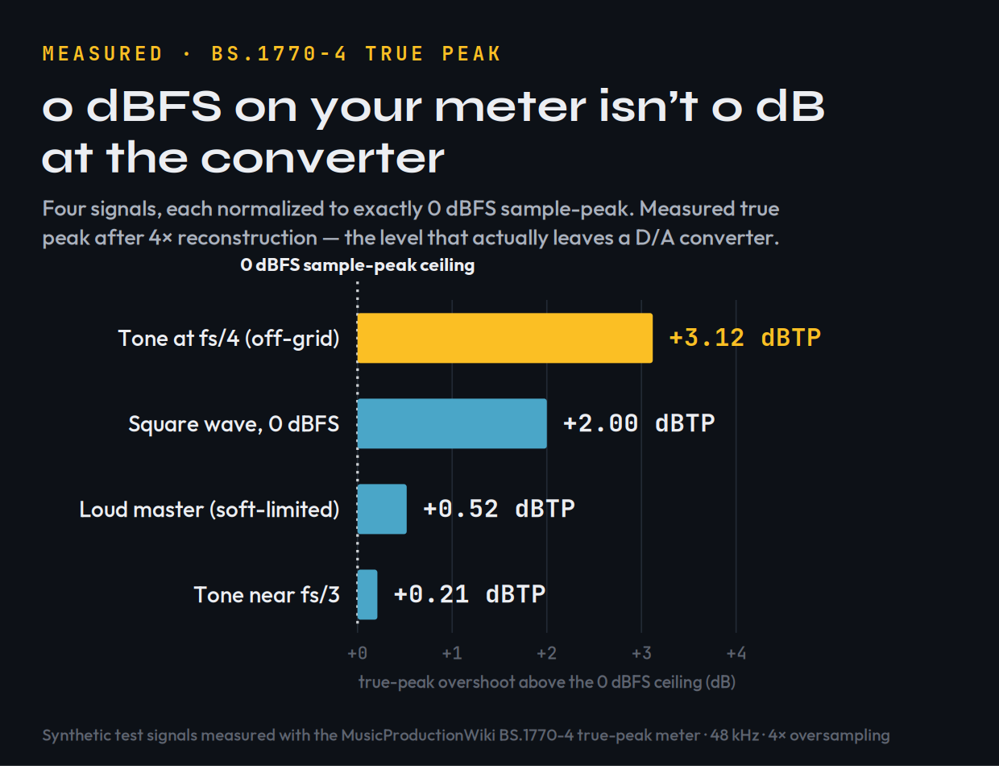
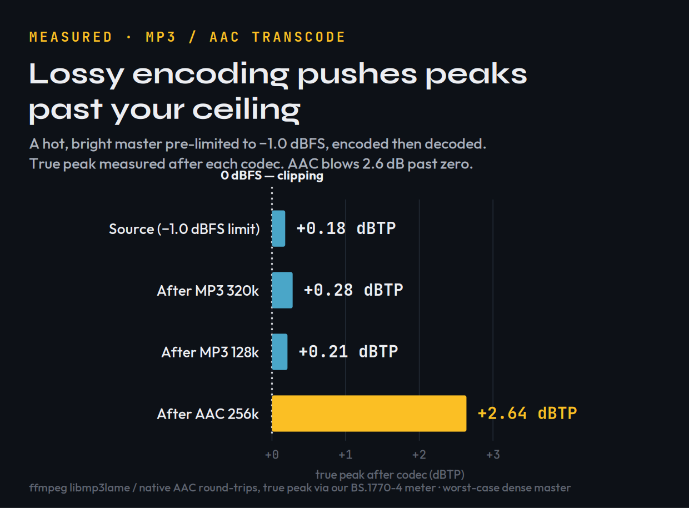
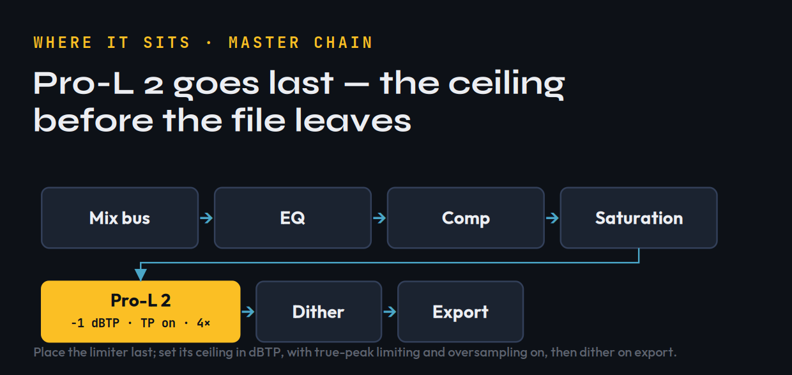

Most limiter reviews tell you Pro-L 2 is “transparent” and “loud,” hand you a spec sheet, and move on. That is not a review — it is a press release with a star rating. So before we judge FabFilter’s limiter, we did the part everyone skips: we measured the actual problem a true-peak limiter exists to solve, then measured what happens to your master after a streaming service gets hold of it. The short version, and it surprises people: a file that reads a perfect 0 dBFS on your DAW’s peak meter can leave a converter at +3 dB, and an innocent-looking master can land above zero after an AAC transcode. That gap is the entire reason Pro-L 2’s headline feature exists, and once you can see it, the $199 question mostly answers itself.
FabFilter Pro-L 2 is the limiter to beat in 2026 — 9.2/10. It is loud, genuinely transparent at sane gain reduction, and its true-peak limiting is standards-correct (EBU R128, ITU-R BS.1770-4, ATSC A/85). Eight limiting algorithms cover everything from invisible mastering to deliberately crushed drum-bus glue, and the metering is the clearest in the category. At $199 it is premium-priced for a single-purpose plugin, and the stock limiter in your DAW will get a bedroom master 90% of the way there. Buy Pro-L 2 if you master often, release to streaming, or want metering you can trust without thinking. If you bounce two songs a year, spend the money elsewhere first. There is a free 30-day trial — use it before you decide.
What Pro-L 2 Actually Is
Pro-L 2 is a brickwall limiter: the last plugin on your mix bus or master chain, the one that catches the loudest peaks so you can raise the overall level without clipping. A limiter is a compressor with an infinite ratio and a hard ceiling — nothing gets past the line you set. That sounds simple, and the cheap ones treat it simply, which is exactly why they distort. The skill is in how the limiter decides which peaks to push down, how fast, and how to reconstruct the waveform so the ear never hears the work being done. That is where a $199 limiter separates from the free one in your DAW.
FabFilter released the original Pro-L in 2013 and the Pro-L 2 update at the end of 2017; the version on sale in 2026 is a mature, much-iterated tool. It ships eight limiting algorithms, up to 32× linear-phase oversampling in its “Superb” quality mode, true-peak and loudness metering to every current broadcast and streaming standard, and a real-time level display that shows input, output, gain reduction and loudness as a single moving picture. It runs as VST/VST3, AU, CLAP, AAX Native and AudioSuite on Windows and macOS, with surround and Dolby Atmos support for post and immersive work. None of that is unusual on a 2026 spec sheet. What separates a good limiter from a loud one is how it behaves at the edges — and the most important edge is one your meter does not even show you.
The price, verified at FabFilter directly in June 2026, is $199 USD (€169 / £149). Retailers like Plugin Boutique and Thomann discount it periodically, and FabFilter has run a 25% sale every Black Friday since 2018, so the effective street price for a patient buyer is closer to $150. A fully functional 30-day trial is available, which matters more for a limiter than for almost any other plugin — you can A/B it against your stock limiter on your own masters before paying a cent. If you already own FabFilter plugins, the bundle upgrade paths (the Mastering Bundle, the full Total Bundle) routinely make Pro-L 2 cheaper as part of a set than as a standalone purchase.
The Problem It Solves: True Peak vs Sample Peak — Measured
Your DAW’s peak meter measures sample peaks: the height of the individual samples in the file. But digital audio is not a staircase of samples — it is a continuous waveform that a converter reconstructs between those samples on playback. Those reconstructed peaks, the inter-sample peaks, can sit higher than any single sample in the file. A track that never exceeds 0 dBFS on your meter can still overshoot on a real D/A converter, on a lossy MP3 or AAC encode, or on a streaming transcode — and that overshoot is audible distortion you did not put there and cannot see on a normal meter.
We wanted to show exactly how big that gap gets, so we generated four test signals, normalized each to exactly 0 dBFS sample-peak, and measured the true peak with our own BS.1770-4 meter — the same engine behind our Mix Fingerprint tool — using 4× oversampled reconstruction. Here is what a sample-peak meter cannot tell you:

Four synthetic signals, each at exactly 0 dBFS sample-peak, measured for true peak with our BS.1770-4 meter (48 kHz, 4× oversampling). A worst-case off-grid tone overshoots by +3.12 dBTP; even a realistic loud master leaks +0.52 dBTP past the ceiling your meter shows.
| Test signal (all at 0 dBFS sample-peak) | Measured true peak | Overshoot |
|---|---|---|
| Tone at f s/4, samples off the crest | +3.12 dBTP | +3.12 dB |
| Full-scale square wave | +2.00 dBTP | +2.00 dB |
| Loud master proxy (soft-limited) | +0.52 dBTP | +0.52 dB |
| Tone near f s/3 | +0.21 dBTP | +0.21 dB |
These are signals we generated and measured to demonstrate the phenomenon — not a bench test of Pro-L 2. The point is what every limiter is up against: how far past a 0 dBFS ceiling a signal can leap is entirely signal-dependent, from a fraction of a dB to over 3 dB. A sample-peak ceiling is a guess; a true-peak ceiling is a guarantee.
This is what Pro-L 2’s True Peak Limiting mode is for. With it enabled, FabFilter states the output is held to your ceiling measured in dBTP, not dBFS — so set it to −1.0 dBTP (Spotify and YouTube’s requirement) and the reconstructed peaks stay under it. FabFilter is candid in its own documentation that the catch is latency: true-peak processing adds roughly 5 ms, and the highest oversampling settings cost CPU. That is an honest trade, and it is the right one for a master.
What Streaming Does to Your Peaks — Measured
Here is the part almost no limiter review tests, and it is the strongest argument for leaving headroom: the file you upload is not the file your listener hears. Spotify, YouTube and Apple Music re-encode your master to a lossy codec, and lossy encoding moves the peaks. To measure it, we took our loud master proxy, limited it to −1.0 dBFS, encoded it through real MP3 and AAC encoders with ffmpeg, decoded the result back to PCM, and measured the true peak that survived.

A hot, bright master pre-limited to −1.0 dBFS, encoded and decoded through real MP3 and AAC codecs. MP3 barely moves the true peak; AAC 256k pushes it to +2.64 dBTP — 2.6 dB past zero, into clipping.
| Master pre-limited to −1.0 dBFS | Gentle master | Hot, bright master |
|---|---|---|
| Source true peak | −1.00 dBTP | +0.18 dBTP |
| After MP3 320 kbps | −0.99 dBTP | +0.28 dBTP |
| After MP3 128 kbps | −1.38 dBTP | +0.21 dBTP |
| After AAC 256 kbps | −0.33 dBTP | +2.64 dBTP |
Measured with ffmpeg (libmp3lame / native AAC) round-trips, true peak via our BS.1770-4 meter. The effect is signal-dependent: a gentle master barely moved, but a hot, bright, dense master encoded to AAC jumped to +2.64 dBTP — well past zero, into clipping — despite starting a full dB below the ceiling. These are worst-case synthetic masters; real music varies, but the direction is consistent and well documented.
Two lessons fall out of this, and both are practical. First, AAC is harsher on peaks than MP3, and AAC is what Apple Music and YouTube lean on — so the “safe” ceiling for streaming is often lower than the −1.0 dBTP the standards quote; many mastering engineers leave −1.5 or even −2.0 dBTP on bright, loud material for exactly this reason. Second, you cannot eyeball any of this. The only way to know your master survives the trip is to set a true-peak ceiling and measure the result — which is precisely the workflow Pro-L 2 is built around, and which you can sanity-check for free in our Mix Fingerprint tool before you upload, and model per-platform with the Loudness Penalty tool.
EBU R128 caps true peak at −1.0 dBTP; ATSC A/85 (US broadcast) at −2.0 dBTP; Spotify and YouTube both target −1.0 dBTP and normalize loudness toward roughly −14 LUFS integrated. A master that is clean on a sample-peak meter but hot on true peak will fail those targets and can distort on transcode. Set Pro-L 2’s ceiling in dBTP, not dBFS, and the guesswork disappears.
The Eight Algorithms, Decoded
Pro-L 2 ships eight limiting styles. Four are inherited from the original Pro-L; four were added in version 2. They are not cosmetic presets — each changes how the limiter handles transients, how much it pumps, and how much character it adds. You do not need to audition all eight on every song, but knowing what each is for turns the menu from intimidating into useful. The descriptions below follow FabFilter’s own documentation and the consensus of mastering reviews:
| Algorithm | Character | Reach for it when… |
|---|---|---|
| Transparent | Clean, no pumping or coloring | You want the limiter invisible — pop, rock, acoustic. |
| Punchy | Pumps a little, stays “safe” | Single tracks: vocals, bass, guitar; some dance material. |
| Dynamic | Enhances transients before limiting | You need punch preserved — rock, drum-forward mixes. |
| Allround | Balances loudness and transparency | You want one safe choice for almost any material. |
| Modern | Default; loud yet very clean | Most masters. Allows near-zero lookahead. Start here. |
| Aggressive | Near-clipping, intentional bite | EDM, trance, metal — loudness is the point. |
| Bus | Deliberately colored; glue and squash | Drum bus or parallel crush — not for the final master. |
| Safe | Zero distortion by design | Delicate acoustic, classical, jazz; conservative levels. |
In practice you will live in Modern for most material — FabFilter made it the default because it achieves high loudness while staying remarkably clean, and it tolerates very short lookahead. Reach for Aggressive when a club master needs to hit hard and you have accepted a touch of clipping character as a feature. Keep Bus in mind not for mastering at all but for drum-bus glue earlier in the mix, where its colour is the point. And remember Safe exists for the day a string quartet or a jazz trio lands on your desk and the worst thing you could do is squash it. The honest takeaway: pick Modern, set your ceiling, and only switch styles if Modern is doing something you can hear and dislike.
Metering You Can Actually Trust
If the algorithms are why engineers reach for Pro-L 2, the metering is why they keep it open. The centre of the interface is a real-time level display that draws input, output and gain reduction as a single moving waveform, so you can see the limiter working — where it is grabbing transients, how hard, and whether the reduction is steady or spiking. Four display modes change how that picture behaves, from a fast oscilloscope-style view to slower, more readable averaging.
Around it sits metering that meets every standard you will be asked to hit: true-peak metering (the inter-sample kind we measured above), and loudness metering to EBU R128, ITU-R BS.1770-4 and ATSC A/85 — momentary, short-term and integrated LUFS plus loudness range. There are K-System scales (K-12, K-14, K-20) for engineers who mix to them, and a right-hand meter for output and gain reduction with peak-hold. The practical value is simple: you stop guessing. You can read your integrated loudness and your true peak at a glance and know, before you bounce, whether the master meets −14 LUFS and −1 dBTP — or whether streaming normalization is about to turn your loud master down anyway.
Louder always sounds “better” for the first few seconds, which is how engineers fool themselves into over-limiting. Pro-L 2’s Unity Gain option lets you hear the effect of the limiting without the associated level increase, so you are judging what the limiter does to the sound rather than just enjoying the volume. It is the single most useful button for keeping a master honest.
How to Set It: A Mastering Walkthrough
A limiter is only as good as the engineer driving it, and most of Pro-L 2’s controls reward restraint. Here is a sane starting point for a streaming master, drawn from FabFilter’s recommended workflow and the measurements above:
| Control | Start here | Why |
|---|---|---|
| Output ceiling | −1.0 dBTP | Meets Spotify / YouTube / EBU R128; True Peak Limiting on. Go to −1.5 for bright, hot masters. |
| Oversampling | 4× | FabFilter: 4× + 0.1 ms lookahead keeps inter-sample peaks within ~0.1 dB. |
| Lookahead | ≥ 0.1 ms | Below this approximates hard clipping — more distortion, more aliasing. |
| Gain reduction | 1–3 dB | Transparent zone. Past ~4–6 dB you are squashing, not limiting. |
| Style | Modern | Workhorse. Switch to Aggressive only for hard EDM masters. |
| Dithering | on (final export) | Only on the very last limiter before reducing bit depth; never twice in a chain. |
Placement matters as much as the knobs. Pro-L 2 belongs last — after your mastering EQ, compression and saturation, with nothing but a dither stage conceptually after it. Drive it with input gain until you see 1–3 dB of gain reduction on the loudest sections; that is the transparent working range. The Attack and Release controls shape the slower envelope: short attack and long release are generally safer and cleaner but can pump, while channel linking lets you treat the stereo image as locked-together or loosened for width. Oversampling is the quality-versus-CPU dial — higher settings reduce aliasing and inter-sample peaks at real CPU cost, which is why FabFilter’s 4×-plus-0.1 ms recommendation is the sweet spot for most masters rather than the maximum 32×.

Where Pro-L 2 belongs: last in the chain, after tonal and dynamic processing, with its ceiling set in dBTP and true-peak limiting on — then dither on the final export, never before.
Slamming 8–10 dB of gain reduction to “make it loud,” then wondering why the master sounds flat and lifeless. A limiter buys you a couple of clean dB; loudness past that comes from the mix and the master chain before the limiter — saturation, clipping, multiband control — not from burying the meter. If you need that much reduction, the problem is upstream. Learn the discipline in how to use a limiter before you reach for a more expensive one.
The Scorecard
Scored on what a mastering-grade limiter is actually asked to do. These are our calibrated assessments, drawing on FabFilter’s published specifications, the loudness-standards documentation, the consensus of mastering reviews, and the measured true-peak and transcode behavior any limiter must control — not a first-party bench test of Pro-L 2’s sound.
| Axis | Score | Why |
|---|---|---|
| True-peak & loudness control | 9.6 | Standards-correct (R128 / BS.1770-4 / A/85); ceiling respected in dBTP; up to 32× oversampling. The category benchmark. |
| Metering & readout | 9.5 | Real-time level display, true-peak and loudness metering, K-System scales, Unity Gain audition. You can trust what you see. |
| Transparency / sound | 9.4 | Clean at sane gain reduction; the Modern algorithm is widely praised for staying invisible until pushed. |
| Versatility | 9.2 | Eight styles span transparent to deliberately crushed; Bus and Safe extend it well beyond the master. |
| CPU & latency | 8.4 | True-peak mode adds ~5 ms latency and high oversampling is CPU-hungry — a fair cost, but real on a big session. |
| Value | 8.6 | $199 is premium for one job; the trial and frequent 25% sales soften it. Stock limiters are “free and fine.” |
| Overall | 9.2 | The limiter to beat — if you master enough to use it. |
Pro-L 2 vs the Alternatives
Honesty first: the limiter built into your DAW is better than the internet implies. Ableton’s Limiter, Logic’s Adaptive Limiter, FL Studio’s Maximus and Pro Tools’ stock dynamics will all hold a ceiling, and several now offer a true-peak mode. For a demo, a SoundCloud upload, or a mix you are not selling, your stock limiter at −1 dBTP is genuinely fine. Pro-L 2 is not competing with “nothing” — it is competing with “good enough,” and the gap is real but narrower than the price suggests. What you are buying is transparency at higher gain reduction, metering you can trust without a second plugin, and the eight algorithms.
Against dedicated rivals, iZotope’s Ozone Maximizer (with its IRC limiting modes) is the obvious cross-shop: Ozone bundles a limiter inside a larger mastering suite with assistant features and matching EQ, so if you want one box that masters end-to-end, Ozone is the better suite buy. Pro-L 2 wins if you want the best single-purpose limiter with the clearest metering and the lightest touch. Boutique options like DMG Limitless and Voxengo Elephant have devoted followings for their look-ahead and shaping, but neither matches Pro-L 2’s blend of metering, interface and ubiquity.
Within FabFilter’s own range, the smarter first purchase is often not the limiter at all. A limiter cannot fix a mix that needs dynamics or tonal work — if your problem is earlier in the chain, the Pro-C 2 compressor or the surgical Pro-Q EQ may do more for your masters than any limiter can. If you would rather see the whole field ranked, our best limiter plugins roundup lays out the current options and where Pro-L 2 sits.
Five Mistakes That Wreck a Master
A great limiter does not save a bad decision. These are the five we see most often, and Pro-L 2 makes every one of them avoidable rather than automatic:
Is It Worth $199?
If you master your own releases, put music on streaming, or simply want to stop guessing whether your ceiling is real, yes — Pro-L 2 is worth it, and it is the one I would buy first. The true-peak correctness alone removes a class of distortion you cannot reliably catch by ear, the transcode behavior we measured makes its dBTP ceiling a genuine safeguard rather than a nicety, and the metering means you stop second-guessing every bounce. For everyone else — the producer who bounces occasionally, the beatmaker selling leases, the artist whose mastering happens at the label — the honest answer is “not yet.” Spend the $199 on the part of your chain that is actually holding your masters back, run the free trial when you are curious, watch for the Black Friday 25% sale, and buy Pro-L 2 the month you find yourself mastering every week. It will still be the limiter to beat when you get there.
Try It Yourself: 3 True-Peak Checks
You do not need to own Pro-L 2 to understand what it does. These build the ear and the habit — the trial covers the rest.
- Take a master you already bounced that hits 0 dBFS on your DAW meter.
- Run it through our free Mix Fingerprint tool and read the true-peak (dBTP) value.
- If it is above 0 dBTP, that is the overshoot your sample-peak meter hid from you — the exact thing a true-peak ceiling prevents.
- Bounce a loud, bright master limited to −1.0 dBFS (true-peak limiting off).
- Encode it to a 256 kbps AAC, then decode back to WAV and measure the true peak.
- Compare to a version limited to −1.0 dBTP with true-peak limiting on. The first can land above zero after AAC; the second should not. That delta is what survives to the listener.
- On one master, set a fixed 3 dB of gain reduction and engage Unity Gain so level is matched.
- Cycle Modern, Transparent, Dynamic and Aggressive without looking, and note which preserves transients and which adds character.
- Only now look at the names. Matching what you heard to what each algorithm is for is the whole skill of mastering by ear, not by meter.
Frequently Asked Questions
If you master your own music regularly or release to streaming, yes — it is the limiter to beat, with standards-correct true-peak limiting, eight limiting algorithms, and metering you can trust. At $199 it is premium for a single-purpose plugin, so if you only bounce a couple of songs a year your DAW's stock limiter set to -1.0 dBTP will get you most of the way. Use the free 30-day trial before deciding.
Your DAW meter shows sample peaks, but a converter reconstructs the waveform between samples, and those inter-sample peaks can exceed your ceiling — we measured a 0 dBFS signal overshooting by over +3 dBTP. True-peak limiting holds the output to your ceiling measured in dBTP, so a -1.0 dBTP setting actually stays under -1.0 on playback. If you release to streaming, you need it.
Start at -1.0 dBTP with True Peak Limiting on, which meets Spotify, YouTube and EBU R128. But our transcode tests showed a hot, bright master can still overshoot after AAC encoding, so for loud or bright material many engineers leave -1.5 or even -2.0 dBTP of headroom. Measure the encoded result rather than trusting the source peak.
Modern is the default for a reason — it is loud yet very clean and works for most masters. Use Aggressive for EDM and other loudness-driven genres, Safe for delicate acoustic, classical or jazz, and Bus for drum-bus glue rather than the final master. Transparent, Punchy, Dynamic and Allround are the carried-over Pro-L 1 styles. Start in Modern and only switch if you can hear a reason to.
It is real but narrower than the price implies. A stock limiter with a true-peak mode at -1 dBTP is genuinely fine for demos and non-commercial work. Pro-L 2 wins on transparency at higher gain reduction, trustworthy true-peak and loudness metering, and eight tailored algorithms. Buy it when you master often enough to notice those differences every week.
Yes — FabFilter states true-peak limiting adds roughly 5 ms of latency, and higher oversampling settings cost CPU. That is fine for mastering and offline bounces. If you need minimal latency for tracking or live use, you can disable true-peak limiting and oversampling and use one of the lighter limiting styles.
Different tools. Ozone is a full mastering suite with a limiter inside it, an assistant and matching EQ — better if you want one box that masters end to end. Pro-L 2 is the best single-purpose limiter with the clearest metering and the lightest touch. If you already have EQ and compression you trust, buy Pro-L 2; if you want an all-in-one mastering chain, buy Ozone.